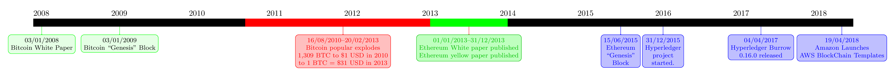

\documentclass[tikz,multi,border=10pt]{standalone}
\usepackage{datenumber,xparse}
\usetikzlibrary{arrows.meta,backgrounds}
\newcounter{chronosstartdate}
\newcounter{chronosenddate}
\newcounter{chronosstartyear}
\newcounter{chronosendyear}
\newcounter{chronosyeardate}
\newcounter{chronosthingdate}
\newcounter{chronosotherthingdate}
\pgfkeys{/pgf/number format,
int detect,
set thousands separator={},
}
\tikzset{
chronos/.code={% https://tex.stackexchange.com/a/159856/ - Claudio Fiandrino
\tikzset{%
align=center,
anchor=mid,
/chronos/.cd,
#1
}%
\setstartyear{\chronosstartyear}%
\setmydatenumber{chronosstartdate}{\chronosstartyear}{\chronosstartmonth}{\chronosstartday}%
\setmydatenumber{chronosenddate}{\chronosendyear}{\chronosendmonth}{\chronosendday}%
\pgfmathsetmacro\chronosunit{(\chronoswidth-20pt)/(\thechronosenddate-\thechronosstartdate)}%
\draw [line width=\chronosheight] (-10pt,0) coordinate (chronos pre) -- +(\chronoswidth,0) coordinate (chronos post);
\coordinate (chronos start) at (0,0);
\coordinate (chronos end) at ([xshift=-10pt]chronos post);
\setcounter{chronosstartyear}{\chronosstartyear}%
\setcounter{chronosendyear}{\chronosendyear}%
\def\tempa{01}%
\ifx\chronosstartmonth\tempa
\ifx\chronosstartday\tempa
\else\stepcounter{chronosstartyear}%
\fi
\else\stepcounter{chronosstartyear}%
\fi
\def\tempa{12}%
\def\tempb{31}%
\ifx\chronosendmonth\tempa
\ifx\chronosendday\tempb
\stepcounter{chronosendyear}%
\fi
\fi
\foreach \i in {\thechronosstartyear,...,\thechronosendyear} {%
\setmydatenumber{chronosyeardate}{\i}{01}{01}%
\node [above, anchor=south, yshift=.5*\chronosheight] at ({(\thechronosyeardate-\thechronosstartdate)*\chronosunit pt},0) {\i}; }
},
chronos set date/.code args={#1-#2-#3:#4}{%
\tikzset{%
/chronos/.cd,
#4 year={#1},
#4 month={#2},
#4 day={#3},
}%
\setmydatenumber{chronos#4date}{\csname chronos#4year\endcsname}{\csname chronos#4month\endcsname}{\csname chronos#4day\endcsname}%
},
chronos date/.style args={#1-#2-#3}{%
chronos set date/.expanded={#1-#2-#3:thing}%
},
chronos period date/.style args={#1-#2-#3}{%
chronos set date/.expanded={#1-#2-#3:otherthing}%
},
/chronos/.search also={/tikz},
/chronos/.cd,
start year/.store in=\chronosstartyear,
start month/.store in=\chronosstartmonth,
start day/.store in=\chronosstartday,
end year/.store in=\chronosendyear,
end month/.store in=\chronosendmonth,
end day/.store in=\chronosendday,
thing year/.store in=\chronosthingyear,
thing month/.store in=\chronosthingmonth,
thing day/.store in=\chronosthingday,
otherthing year/.store in=\chronosotherthingyear,
otherthing month/.store in=\chronosotherthingmonth,
otherthing day/.store in=\chronosotherthingday,
start date/.style args={#1-#2-#3}{%
start year={#1},
start month={#2},
start day={#3},
},
end date/.style args={#1-#2-#3}{%
end year={#1},
end month={#2},
end day={#3},
},
width/.store in=\chronoswidth,
height/.store in=\chronosheight,
period/.style={draw=gray},
period event line/.style={draw=gray, -{Triangle[width=1.5pt, reversed, length=.75pt, fill=gray]}},
period event/.style={anchor=north, fill=gray!25, draw=gray, rounded corners, align=center, font=\footnotesize},
event line/.style={draw=gray, -{Triangle[width=1.5pt, reversed, length=.75pt, fill=gray]}},
event/.style={anchor=north, fill=gray!25, draw=gray, rounded corners, align=center, font=\footnotesize},
start date=1001-10-01,
end date=1003-06-14,
width=100mm,
height=1pt,
chronos date=1850-01-01,
chronos period date=1851-01-01,
}
\NewDocumentCommand \chronosevent { O {} m O {} +m D () { -10pt-.5*\chronosheight } }
{%
\scoped[on background layer]{\path [postaction={/chronos/event line, #1}, chronos date/.expanded={#2}] ({(\thechronosthingdate-\thechronosstartdate)*\chronosunit pt},0) -- +(0,#5) node [/chronos/event, #3] {\chronosthingday/\chronosthingmonth/\chronosthingyear\\#4};}
}
\NewDocumentCommand \chronosperiod { O {} m O {} m O {} +m D () { -10pt-.5*\chronosheight } }
{%
\tikzset{%
chronos date/.expanded={#2}, chronos period date/.expanded={#4}
}
\path [postaction={line width=\chronosheight, /chronos/period, #1}] ({(\thechronosthingdate-\thechronosstartdate)*\chronosunit pt},0) -- ({(\thechronosotherthingdate-\thechronosstartdate)*\chronosunit pt},0);
\scoped[on background layer]{\path [postaction={/chronos/period event line, #3}] ({(.5*\thechronosotherthingdate+.5*\thechronosthingdate-\thechronosstartdate)*\chronosunit pt},0) -- +(0,#7) node [/chronos/period event, #5] {\chronosthingday/\chronosthingmonth/\chronosthingyear--\chronosotherthingday/\chronosotherthingmonth/\chronosotherthingyear\\#6};}
}
\begin{document}
\begin{tikzpicture}
[
% yscale = 5,
chronos={%
width=360mm,
height=10pt,
start date=2008-01-01,
end date=2018-05-05,
period/.style={draw=green},
event line/.append style={draw=blue},
period event line/.append style={draw=green},
event/.append style={fill=blue!25, draw=blue, text=blue},
period event/.append style={fill=green!25, draw=green!75!black, text=green!75!black},
}
]
%\chronosperiod [draw=red] {2011-10-10} [draw=red] {2012-01-16} [fill=red!25, draw=red, text=red] {Leave}
%\chronosperiod {2013-03-23} {2014-05-27} {training}
\chronosevent[draw=green] {2008-01-03} [draw=black,fill=green!10, draw=green, text=black]{Bitcoin White Paper}
\chronosevent[draw=green] {2009-01-03} [draw=black,fill=green!10, draw=green, text=black]{Bitcoin “Genesis” Block}
\chronosperiod [draw=red] {2010-08-16} [draw=red] {2013-02-20} [fill=red!25, draw=red, text=red] {Bitcoin popular explodes \\ 1,309 BTC to \$1 USD in 2010 \\ to 1 BTC = \$31 USD in 2013}
\chronosperiod {2013-01-01} [draw=red] {2013-12-31} {Ethereum White paper published \\ Ethereum yellow paper published}
\chronosevent {2015-06-15} {Ethereum \\ “Genesis” \\ Block}
% See https://blog.seedly.sg/cryptocurrency-timeline-beginning-end-everything/
\chronosevent {2015-12-31} {Hyperledger \\ project \\ started.}
\chronosevent {2017-04-04} {Hyperledger Burrow \\ 0.16.0 released}
\chronosevent {2018-04-19} {Amazon Launches \\ AWS BlockChain Templates}
% Researchers published a paper showing that by November 2013 bitcoin commerce was no longer driven by “sin” activities but instead by legitimate enterprises. Uber switched to bitcoin in Argentina after the government blocked credit card companies from dealing with Uber.
%https://hackernoon.com/blockchain-jobs-and-salaries-2018-report-45d3e7741c19
\end{tikzpicture}
\end{document}